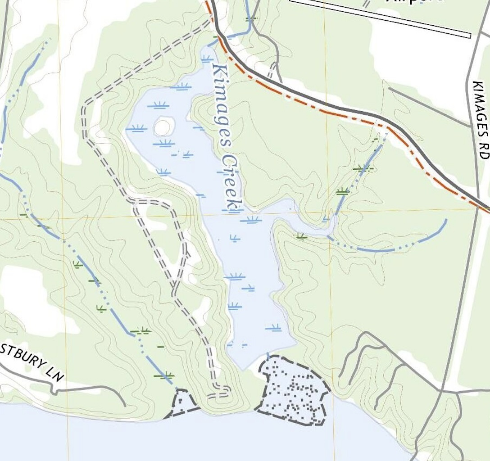
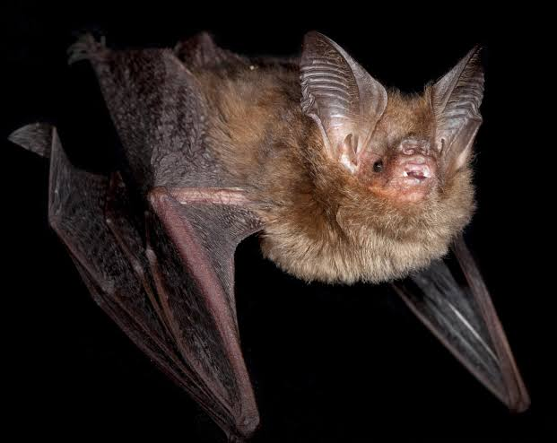
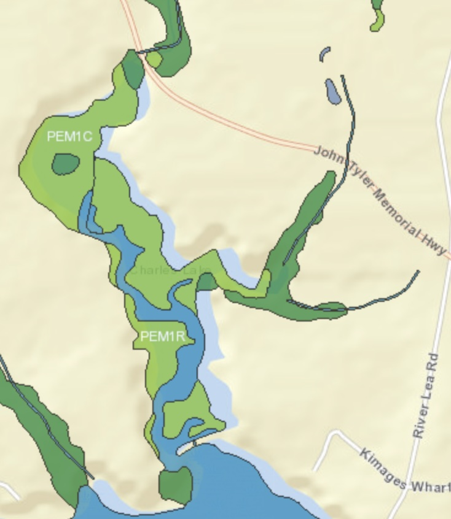
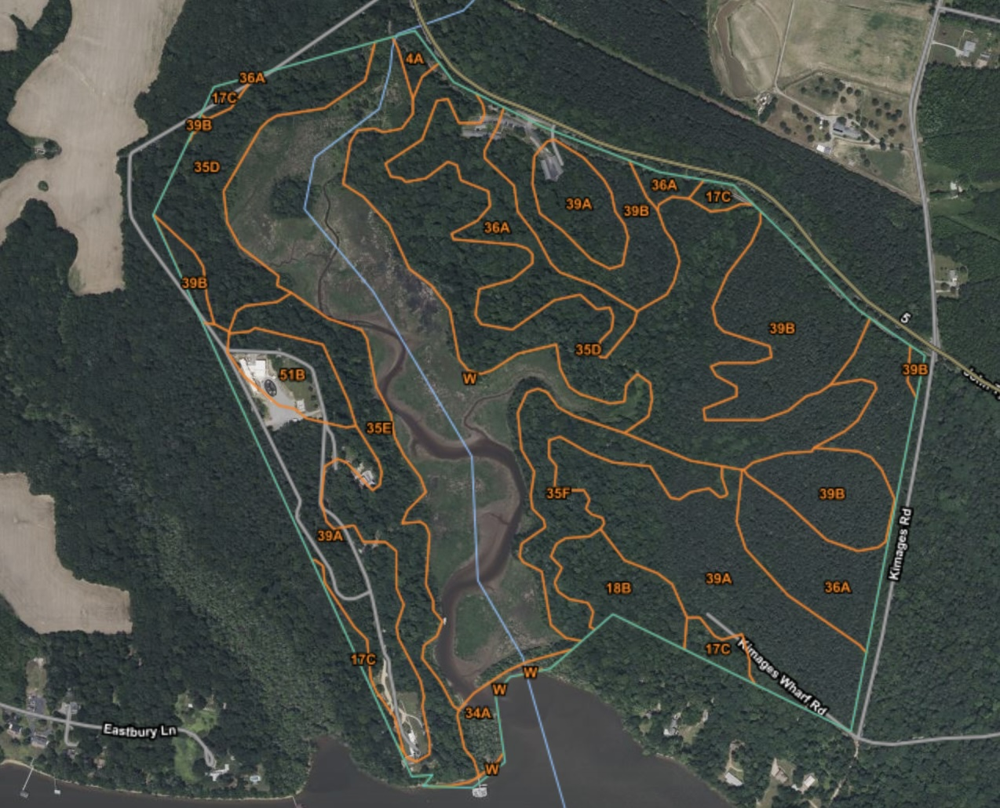
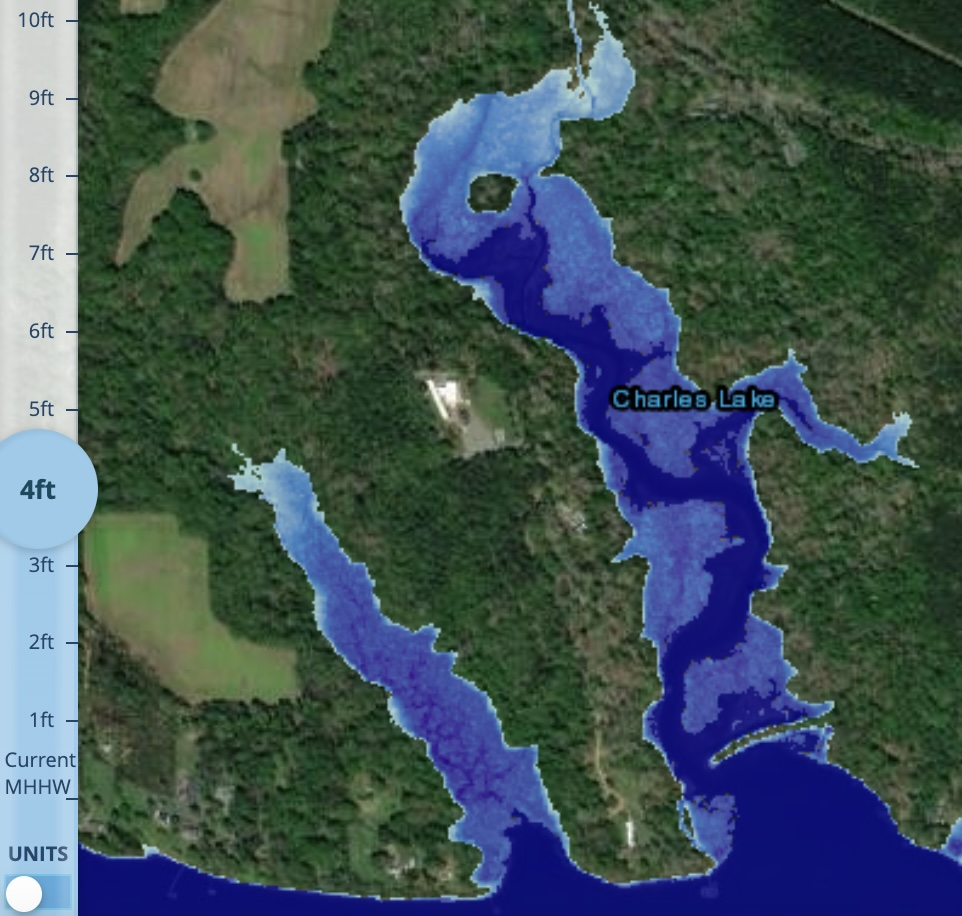

RRCIPAC
Rice River Center Information for Planning and Consulting (IPAC) Analysis
Location Background
The Rice River Center (RRC) is part of VCU Life Sciences and encompasses roughly 360 acres of riparian marshes, tidal creeks and mature forests located on the James River in between Richmond and Williamsburg, Virginia.

Threatened and Endangered (T&E) Species
Listed below are T&E species that potentially inhabitat RRC’s property as indicated by the U.S Fish and Wildlife Services IPAC tool1:
Northern Long-eared bat (Myotis septentrionalis)
Tricolored Bat (Perimyotis subflavus)
Monarch Butterfly (Danaus plexippus)
Sensitive Joint-vetch (Aeschynomene viginica)

Critical Habitats
None indicated through the FWS IPAC tool, however; one would need to determine the presence of T&E previously mentioned before being completely certain.
Migratory Bird and Fish Species
The following list includes migratory bird species potentially impacted by projects within RRC’s property:
Bald Eagle (Haliaeetus leucocephalus)
Blue-winged Warbler (Vermivora cyanoptera)
Bobolink (Dolichonyx oryzivorus)
Canada Warbler (Cardellina canadensis)
Chimney Swift (Chaetura pelagica)
Eastern Whip-poor-will (Antrostomus vociferus)
Grasshopper Sparrow (Ammodramus savannarum)
Kentucky Warbler (Geothlypis formosa)
King Rail (Rallus elegans)
Lesser Yellowlegs (Tringa flavipes)
Pectoral Sandpiper (Calidris melanotos)
Prairie Warbler (Setophaga discolor)
Prothonotary Warbler (Protonotaria citrea)
Red-headed Woodpecker (Melanerpes erythrocephalus)
Ruddy Turnstone (Arenaria interpres morinella)
Rusty Blackbird (Euphagus carolinus)
Scarlet Tanager (Piranga olivacea)
Semipalmated Sandpiper (Calidris pusilla)
Short-billed Dowitcher (Limnodromus griseus)
Wood Thrush (Hylocichla mustelina)
Wetland Impact
Within the RRC tract, the following are the general types of wetlands along with their estimated coverage in acres and brief descriptions of each from the EPA and FWS. Pertinent riverine systems are also mentioned. More specific subcategories will be discussed later in the document.
Freshwater Emergent Wetland (18.96 acres)
- Place where the land “emerges” from the water to join the forest and the plants that grow there “emerge” from the water. They are specially adapted plants called hydrophytes that grow well in a wetland environment.(epa.gov)2
Freshwater Forested/Shrub Wetland (3.73 acres)
- Freshwater Forested and shrub wetlands are often found adjacent to one another. Forested Wetlands are often inundated with floodwater from nearby rivers and steams, and are sometimes covered by many feet of very slowly moving or standing water. In very dry season they can represent the only shallow water for large areas and the only critical habitat for a variety of wetland species such Wood Ducks (Aix sponsa), River Otters (Lutra canadensis) and Cottonmouth Snakes (Agkistrodon piscivorus). Shrub wetlands vary from forested wetland primarily in the presence of shrubby vegetation like Buttonbush, Willow, Dogwood (Cornus sp.) and Swamp Rose (Rosa palustris) in the former.2
Riverine (~5 acres)
- Found in floodplains and riparian zones associated with stream channels and can be broken down based on watershed position into tidal, lower perennial, upper perennial, and nonperennial subclasses.(epa.gov)3
Wetland Classes/Sub-classes
Listed and defined below are the alpha numeric codes for the classes and sub-classes of wetland and riparian habitat types for the RRC tract according the the FWS National Wetland Inventory (NWI).1 These codes are known as the Cowardin classification system, which was adopted by the FWS in 1979 and correspond to classifications that best describe features such as hydrology depth and duration, vegetative cover, dominant soils or substrate and landscape position.(fws.gov)8 Estimate of the coverage of each in acres is also indicated in parenthesis. Please notes that these area estimates, particularly with respect to the riparian habitats, are very much estimates, as the boundaries used to delineate the tract were drawn by hand based off of an image of a polygon shapefile. This can account for differences in the wetland codes found using the FWS IPAC tool and the FWS NWI map. Additionally, wetland codes are based on aerial image analysis from 2012, which affects the specificity in which codes are assigned (attributes such submerged aquatic vegetation (SAV’s) are largely, if not entirely, unaccounted for).
Cowardin Classification System Code Hierarchy (e.g. A1BCDe):
(In descending order)
System (A)
- Subsystem (A1)1
Class (BC)
- Subclass (BC-)
Water Regime (D)
Special Modifier (e)
RRC Wetland Codes
PEM1R (.518 acres)
(P) System Palustrine: Includes all nontidal wetlands dominated by trees, shrubs, persistent emergents, emergent mosses or lichens, and all such wetlands that occur in tidal areas where salinity due to ocean-derived salts is below 0.5 ppt. It also includes wetlands lacking such vegetation, but with all of the following four characteristics: (1) area less than 8 ha (20 acres); (2) active wave-formed or bedrock shoreline features lacking; (3) water depth in the deepest part of basin less than 2.5 m (8.2 ft) at low water; and (4) salinity due to ocean-derived salts less than 0.5 ppt. (fws.gov)4
(EM) Class Emergent: Characterized by erect, rooted, herbaceous hydrophytes, excluding mosses and lichens. This vegetation is present for most of the growing season in most years. These wetlands are usually dominated by perennial plants.4
- (EM1) subclass Persistent: Dominated by species that normally remain standing at least until the beginning of the next growing season. This subclass is found only in the Estuarine and Palustrine systems.4
(R) Water Regime Seasonally Flooded-Tital: tidal fresh surface water is present for extended periods (generally for more than a month) during the growing season, but is absent by the end of the season in most years. When surface water is absent, the depth to substrate saturation may vary considerably among sites and among years. This Modifier is used for Palustrine habitats only.4
PEM1C (17.961 acres)
- (C) Class Seasonally Flooded: Surface water is present for extended periods especially early in the growing season, but is absent by the end of the growing season in most years. The water table after flooding ceases is variable, extending from saturated to the surface to a water table well below the ground surface.4
PEM1E (.477 acres)
- (E) Class Seasonally Flooded: Surface water is present for extended periods especially early in the growing season, but is absent by the end of the growing season in most years. The water table after flooding ceases is variable, extending from saturated to the surface to a water table well below the ground surface.4
PFO1/4A (.354 acres)
(FO) Class Forested: Characterized by woody vegetation that is 6 m tall or taller.4
(FO1) subclass Broad-Leaved Deciduous: Woody angiosperms (trees or shrubs) with relatively wide, flat leaves that are shed during the cold or dry season; e.g., black ash (Fraxinus nigra).4
*NOTE: backslash (/) indicates a split class.
(FO4) subclass Needle-Leaved Evergreen: The dominant species in Needle-leaved Evergreen wetlands are young or stunted trees such as black spruce or pond pine.4
(A) Class Temporary Flooded: Surface water is present for brief periods (from a few days to a few weeks) during the growing season, but the water table usually lies well below the ground surface for the most of the season.4
PFO1R (2.135 acres)
PFO1A (1.062 acres)
R1UBV (~5 acres)2
(R) system Riverine: includes all wetlands and deepwater habitats contained within a channel, with two exceptions: (1) wetlands dominated by trees, shrubs, persistent emergents, emergent mosses, or lichens, and (2) habitats with water containing ocean-derived salts of 0.5 ppt or greater. A channel is an open conduit either naturally or artificially created which periodically or continuously contains moving water, or which forms a connecting link between two bodies of standing water.4
- (R1) subsystem Tidal: extends from the upstream limit of tidal fluctuations down to the upper boundary of the Estuarine System, where the concentration of ocean-derived salts reaches 0.5 ppt during the period of average annual low flow. The gradient is low and water velocity fluctuates under tidal influence. The stream bottom is mainly mud with occasional patches of sand. Oxygen deficits may sometimes occur and the fauna is similar to that in the Lower Perennial Subsystem. The floodplain is typically well developed.4
(UB) Class Unconsolidated Bottom: Includes all wetlands and deepwater habitats with at least 25% cover of particles smaller than stones (less than 6-7 cm), and a vegetative cover less than 30%.4
(V) Class Permanently Flooded-tidal: Tidal fresh water covers the substrate throughout the year in all years. This Modifier is used for Riverine, Lacustrine, and Palustrine habitats.4
R4SBC (.672 acres)
(R4) subsystem Intermittent: includes channels that contain flowing water only part of the year. When the water is not flowing, it may remain in isolated pools or surface water may be absent.4
(SB) Class Streambed: includes all wetlands contained within the Intermittent Subsystem of the Riverine System and all channels of the Estuarine System or of the Tidal Subsystem of the Riverine System that are completely dewatered at low tide.4
R1USQ (.564 acres)
(US) Class Unconsolidated Shore: Includes all wetland habitats having two characteristics: (1) unconsolidated substrates with less than 75 percent areal cover of stones, boulders or bedrock and; (2) less than 30 percent areal cover of vegetation. Landforms such as beaches, bars, and flats are included in the Unconsolidated Shore class.4
(Q) Class Regularly Flooded: Tides alternately flood and expose the substrate daily for variable periods (from a few weeks to several months) during the growing season. This Modifier is used for Riverine and Lacustrine habitats.4
R5UBH (.038 acres)
(R5) subsystem Unknown Perennial: created specifically for use when the distinction between lower perennial, upper perennial, and tidal cannot be made from aerial photography and no data is available.4
(H) Class Permanently Flooded: Water covers the substrate throughout the year in all years.4

Tidal Data
Among the ten wetland classes previously list, four are under the influence of lunar driven oceanic tides: PEM1R, PFO1R, R1UBV, and R1USQ. See the list of Wetland codes for more details.
The nearest tide station, per the NOAA, is Chester, VA (number 8638491) and for October 24, 2024 lists high tides at 11:04 AM and 11:18 PM at heights of 2.7ft and 2.9ft respectively. Low tides are listed at 5:23 AM and 5:23 PM at heights of 0.35 ft and 0.39 ft respectively.6
Soil Data
Per the USDA web soil survey, the soil series for Harris Creek Swamp is Nevarc-Remlik and has a typical soil pedon from 0 to 41 inches as follows10:
A - 0 to 3 inches; grayish brown (2.5Y 5/2) silt loam; weak fine granular structure; friable; many fine and medium roots; extremely acid; clear smooth boundary. (0 to 8 inches thick).10
E - 3 to 14 inches; pale brown (10YR 6/3) loam; common medium distinct yellowish brown (10YR 5/6) Fe masses; weak fine granular structure; many fine and medium roots; very strongly acid; clear smooth boundary. (0 to 16 inches thick)10
Bt1 - 14 to 19 inches; yellowish brown (10YR 5/6) clay loam; common medium faint strong brown (7.5YR 5/6) Fe masses; moderate medium subangular blocky structure; firm; many fine and medium roots; many faint clay films on faces of peds; extremely acid; gradual smooth boundary.10
Bt2 - 19 to 26 inches; strong brown (7.5YR 5/6) clay; common medium distinct red (2.5YR 4/6) and and brownish yellow (10YR 6/6) Fe masses, and common medium distinct pinkish gray (7.5YR 7/2) Fe depletions; weak medium prismatic structure parting to weak medium subangular blocky; firm; common fine roots; common distinct clay films on faces of peds; very strongly acid; gradual smooth boundary.10
Bt3 - 26 to 42 inches; strong brown (7.5YR 5/6) clay; many medium distinct red (2.5YR 4/6) and brownish yellow (10YR 6/6) Fe masses and pinkish gray (7.5YR 7/2) Fe depletions; weak medium prismatic structure parting to weak medium subangular blocky; very firm; few fine roots; common distinct clay films on faces of peds; very strongly acid; gradual smooth boundary. (Combined thickness of the Bt horizon is 20 to 50 inches)10
This soil class is considered to be well drained. The soil series name for Kimages creek itself is listed as W (Water). The series name for symbol 39A is Peawick silt loam, 0 to 2 percent slops and it has a national map unit symbol of 3ynx.10 It is considered to be moderately well drained.

The average beginning and end dates for my hometown of Staunton, VA’s growing season are April 30th and October 10th, which adds up to about 163 days in the growing season. For areas of my hometown to meet the classification for wetland hydrology, groundwater or surface water would need to be within 30 cm of the ground surface for at least 20 consecutive days based on the 1/8 of the growing season rule.
WETCAT Assessment
The following tables were obtained using the Virginia Institute of Marine Science’s and DEQ’s WetCAT tool11:
| Score Type | Score | Minimum | Maximum |
|---|---|---|---|
| Habitat (average) is Somewhat Stressed | 0.84 | 0.53 | 1.00 |
| Habitat Restoration Potential (average %) | 5 | 0 | 24 |
| Water Quality (mode) is Somewhat Stressed | 0.7 | 0.4 | 1.0 |
| Water Quality Restoration Potential (mode) | 0 | 0 | 75 |
| Wetland Class | Acres | # Wetlands | Ave Habitat Score | Min Habitat Score | Max Habitat Score | Ave Habitat Restoration Potential (%) | Mode WQ Score | Min WQ Score | Max WQ Score | Mode WQ Restoration Potential (%) |
|---|---|---|---|---|---|---|---|---|---|---|
| PEM | 48.19 | 6 | 0.85 | 0.73 | 1 | 4 | 1 | 0.7 | 1 | 0 |
| PFO | 14.85 | 6 | 0.83 | 0.53 | 0.94 | 7 | 0.7 | 0.4 | 0.7 | 0 |
| Stress Level | # Wetlands (Habitat) | # Wetlands (Water Quality) |
|---|---|---|
| Slightly Stressed | 4 | 3 |
| Somewhat Stressed | 7 | 7 |
| Somewhat Severely Stressed | 1 | 2 |
| Severely Stressed | 0 | 0 |
With a Habitat (average) is Somewhat Stressed score of .84 and on average just five percent habitat restoration potential, the wetland condition for Kimages creek is relatively healthy compared to other, particularly more developed, wetland sites in Eastern Virginia.
NOAA Sea Level Rise Assessment
Per the NOAA Sea Level Rise tool, the remnant of Charles lake looks to be nearly entirely inundated at 4ft Mean Higher High Water (MHHW) levels.12 Levels MHHW above 4ft and rates of inundation at RRC and Kimages Creek look to show somewhat logarithmic increases, with the most substantial impacts being below the 5 feet mark. Per the Marsh migration tab, sea level rise for “Intermediate High” projections and “no accretion” is estimated at 5.18ft, which is roughly 4.75ft above the current MHHW. Selecting the projection “High Accretion 6mm/yr”, the sea level rise for 2100 is 3.41ft. The different numbers are reflected by how accretion allows marshes to keep up with sea level rise. Higher accretion rates essentially indicates wetland ability to better “sequester” water, and mitigate the impact of sea level rise as seen by our previous numbers.12

Wetland Policies
It is recommended that the U.S. and coast states should reconsider wetland mitigation policies regarding tidal wetlands. Reasons for this include the irreplaceable ecological roles these wetlands play, the limitations of current mitigation strategies, and the escalating threats posed by climate change and sea level rise. These factor are elaborated on below.
Ecological Significance and Irreplaceability: Each of the prior sections provides evidence for how wetlands are important for factors including biodiversity, flood control, and carbon sequestration. They provide critical habitats for a vast array of species (such as the twenty migratory bird species listed at the beginning of this document), many of which are endangered (at least 4 are listed in the first section) or otherwise dependent on these unique ecosystems. Wetlands also protect shorelines from erosion and act as natural buffers during storms, which is particularly vital as climate events increase in frequency and intensity. Their role in capturing and storing carbon helps offset greenhouse gas emissions, making them a natural defense against climate change.13,14
Limitation of Current Policies: Existing wetland mitigation often relies on restoration projects that aim to recreate wetland ecosystems in different locations or in degraded wetland areas. However, studies have shown that created or restored wetlands often fail to replicate the full range of ecological functions and services of the original wetlands.13,2,14 They frequently lack the same biodiversity, structural complexity, and resilience. This is partly because tidal wetlands are influenced by a complex interplay of salinity, sediment supply, and tidal action that is not easily replicated. Thus, the destruction of natural tidal wetlands in favor of “mitigation” often results in a net loss of wetland functionality and value.
Threat of Climate Change and Sea-Level Rise: As depicted in the previous section, climate change and sea-level rise pose significant threats to coastal wetlands. Rising sea levels can lead to the inundation and conversion of freshwater wetlands into brackish or saltwater systems, and higher temperatures can disrupt delicate ecosystems. Coastal development and urban sprawl often prevent wetlands from naturally migrating inland. Consequently, policies that allow for wetland destruction with a promise of mitigation are especially dangerous, as it’s uncertain whether restored wetlands will survive or adapt to these changing conditions. Additionally, the loss of these wetlands makes coastal communities more vulnerable to storm surges and flooding, which will only become more frequent with climate change.13,14
Given the limitations of current restoration projects and policies, prioritization of protecting wetland ecosystems can ensure the continuation of their critical services and provide a stronger natural defense against the effects of climate change.
Sources:
- FWS IPAC tool. https://ipac.ecosphere.fws.gov/location/XY6T4GP5QVA35AH22WB2Q2XS4Q/resources#wetlands
- EPA Classification and Types of Wetlands. https://www.epa.gov/wetlands/classification-and-types-wetlands#shrub
- EPA Methods for evaluating wetland condition: #7 Wetlands Classification. https://www.epa.gov/sites/default/files/documents/wetlands_7classification.pdf
- FWS National Wetland Inventory: surface waters and wetlands. https://fwsprimary.wim.usgs.gov/wetlands/apps/wetlands-mapper/
- USGS Dutch Gap Map 2022. https://ngmdb.usgs.gov/ht-bin/tv_browse.pl?id=566b6dbc12b4f61c5be7b3dc87133e52
- NOAA Tides and Currents Map Tool. https://tidesandcurrents.noaa.gov/map/index.html
- USDA Web Soil Survey Tool. https://websoilsurvey.sc.egov.usda.gov/App/HomePage.htm
- Stormwater Factsheet https://www.in.gov/idem/files/factsheet_owq_stormwater_understanding_nwi.pdf
- Wetland Hydrology, R W Tiner, University of Massachusetts, Amherst, MA, USA. 2009 Elsevier Inc. Pgs. 778-786
- USDA Web Soil Survey. http://websoilsurvey.sc.egov.usda.gov/App/HomePage.htm
- VIMS WetCAT tool. https://cmap22.vims.edu/WetCAT/
- NOAA Sea-level Rise Tool. https://coast.noaa.gov/digitalcoast/tools/slr.html
- Restoring Virginia’s Wetlands: A Citizen’s Toolkit. 2005 edition. http://www.deq.virginia.gov/Portals/0/DEQ/Water/WetlandsStreams/restoringvawetlandstoolkit.pdf
- Regional Supplement to the Corps of Engineers Wetland Delineation Manual: Atlantic and Gulf Coastal Plain Region (Version 2.0). https://www.usace.army.mil/Missions/Civil-Works/Regulatory-Program-and-Permits/reg_supp/
Footnotes
When bold and non-bold characters appear together, the bold character represent the “sub” aspect while the non-bold represent the parent aspect.↩︎
The FWS Wetland tool did not specify the area of this classification that falls within the RRC property, and hence an estimate is given by subtracting areas of other wetland environments from the total RRC area.↩︎